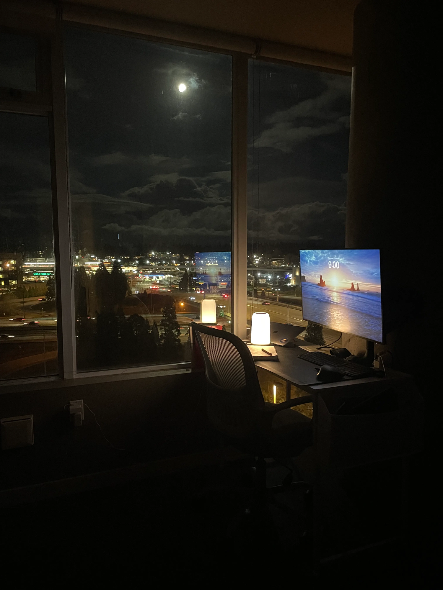

A (Statistically Significant) Romance With Math
What finally made statistics click — and kickstarted my data science journey.

9 PM. Study mode. The moon, a full lamp, and a city humming below — exactly the kind of night statistics starts to make sense.
Admitting that I like math — and love statistics — makes me sound boring almost instantly. It's definitely not something I'd bring up at a party or on a date (not on the first one, for sure). But it's something I discovered later in life. I was always good at math, but not good enough to be a math expert, and definitely not enough to be a physics guru. In fact, I sucked at physics — which I realized after spending two years enrolled in an electronics engineering program.
On the bright side, I did discover that I loved electronics, and through that, I was introduced to computer science. (It's been a long journey — from learning 8086 microcontrollers to exploring AI.) Eventually, I realized there was a particular kind of math that, when combined with computer science, could power up any field. That is how I found data science — and this curious sister of mathematics called statistics. I knew I'd finally found a branch of math whose applications genuinely delighted me.
But even then, I couldn't quite befriend statistics. I did it because I had to.
Like a bitter arranged marriage that began with nothing but compromise — I slowly began to understand statistics. I looked at it through a non-judgmental lens and finally started to see its beauty.
Like most relationships, I realized the real problem had been a lack of communication — or at least, ineffective communication. Tutorials and MOOCs weren't helping me. I needed something more — something more personal.
That opportunity came during my master's at Berkeley, when I finally had the time to give statistics my full attention — free from the constant demands of a full-time consulting job. I dove in, not relying on just one MOOC, but the entire internet: Reddit, Wikipedia, Medium — you name it. It took everything I had (including the painful return to using an actual pen and notebook instead of my computer or iPad) to slowly start making sense of it all.
Eventually, I decided to take the relationship to the next level by enrolling in a class on Quantitative Methods. The lectures were the perfect complement to my self-study efforts. I began to find beauty in t-tests and ANOVA — concepts that had once felt like pure nightmare fuel. And I could finally explain to another human being what in the world a p-value is. I got introduced to books like The Elements of Statistical Learning (an absolute gem if you are still learning), How to Lie with Statistics, Naked Statistics, and The Data Detective, and I kept falling deeper in admiration of something so simple, yet so daunting.
I finally graduated from Berkeley with a Master's degree focused on Data Science — and a happy ending with Statistics, who I now carry proudly in my heart. In two years, I not only aced the Quantitative Methods class but also embarked on a TA-ship, teaching undergrads the sweetness (and horrors) of statistics and R in a Research Methods course. All this, in addition to a full curriculum of traditional Data Science courses and a LOT of coding. I even found myself enjoying a Field Experiments class, where I got to design and run an A/B test with some wonderfully kind participants.
In the end, I feel I reached a kind of closure with this once-intimidating subject — now the very backbone of my skills as a data professional.
You might be wondering why I've romanticized (perhaps a bit excessively?) my journey with statistics. But for me, choosing this path wasn't about following a "hot" career trend — it was a passion-fueled story. I genuinely enjoyed the process of learning, unlearning, and relearning. And I'm still excited to keep going, to keep growing.
I hope you enjoyed reading about my journey — and that it left you with even the tiniest spark of hope: that anyone can get good at statistics, with time, curiosity, and the right resources.
"The expert in anything was once a beginner." — Helen Hayes